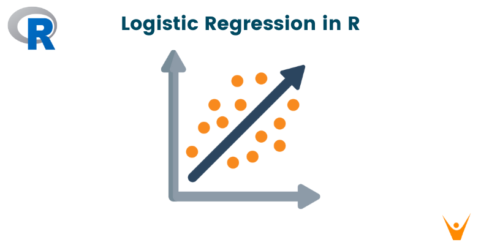

Ариша Штыпель
Профиль
Аналитик данных с фокусом на антифрод, AML и финансовые расследования. Имею опыт работы с Python и SQL для анализа данных, выявления аномалий и поведенческих паттернов. Работаю с алгоритмами машинного обучения с использованием scikit-learn. Выпускница University College London (BSc Security and Crime Science), где изучала анализ данных, кибер- и финансовую преступность, а также методы их выявления и предотвращения.
Технические навыки
Проекты

Анализ восприятия коррупции и безопасности в Гонконге
Анализ взаимосвязи между восприятием безопасности и коррупции на основе данных World Values Survey (Гонконг, ~2000 наблюдений). Проведено построение и сравнение моделей бинарной логистической и множественной линейной регрессии для оценки влияния субъективной коррупции и демографических факторов. Дополнительно выполнен анализ взаимодействий (moderation analysis).
Анализ транзакций и выявление фрода
Анализ транзакционных данных с целью выявления подозрительных паттернов поведения пользователей. Проект будет включать разработку SQL-запросов и построение метрик риска.
Анализ медийного дискурса (NLP)
Анализ текстовых данных новостных источников с использованием методов NLP для выявления изменений в тональности и тематике публикаций.
Публикации
Взаимосвязь торговли людьми и торговли наркотиками: выявление паттернов использования запрещённых веществ на жертвах с целью контроля
Сентябрь 2024
Исследование посвящено взаимосвязи торговли людьми и торговли наркотиками через анализ использования запрещённых веществ как средства контроля над жертвами. Работа основана на данных CTDC и применяет PCA для выявления демографических, географических и поведенческих паттернов.
Анализ наиболее распространенных мошеннических схем, связанных с криптовалютами
Март 2023
Аналитическая статья, посвящённая ключевым типам мошенничества в криптовалютной сфере, включая rug pulls, pump-and-dump и Ponzi-схемы. Рассматриваются механики реализации атак, поведенческие паттерны злоумышленников и ключевые риски, связанные с недостатком регулирования и анонимностью криптовалют.
Образование
University College London
BSc Security and Crime Science
Выпуск: 2024
Data Science
Изучение методов анализа данных и машинного обучения в R для выявления закономерностей в структурированных и текстовых данных.
Ключевые навыки
- Сбор и предобработка данных (web scraping, API)
- TF-IDF, Bag-of-Words, n-граммы
- Кластеризация (k-means), PCA
- Классификация и регрессия
Программирование и анализ данных
Изучение Python и анализа данных с акцентом на практическое применение в аналитических задачах и обработке данных.
Ключевые навыки
- Python (Pandas, NumPy)
- SQL (JOIN, GROUP BY, оконные функции)
- Очистка данных и feature engineering
- Визуализация (Matplotlib, Seaborn)
- Machine Learning модели Scikit-learn
Киберпреступность
Изучение механизмов киберпреступности, цифрового мошенничества и кибератак, включая их реализацию, мотивацию и методы противодействия.
Ключевые навыки
- Анализ онлайн-мошенничества (phishing, ATO)
- Массовый фрод vs целевые атаки (APT)
- Инфраструктура киберпреступности (dark web, C2)
- Методы предотвращения и защиты
Criminal Investigation and Intellgence/Криминальные расследования
Изучение методов расследования и анализа информации для выявления преступных схем и построения доказательных выводов.
Ключевые навыки
- Intelligence cycle и hypothesis testing
- Анализ и верификация данных
- Выявление связей и паттернов
- Построение аналитических версий
Статистика
Изучение вероятностных и статистических методов для анализа неопределённости, выявления закономерностей и обоснования выводов на основе данных.
Ключевые навыки
- Вероятности и распределения
- Проверка гипотез и доверительные интервалы
- Работа с выборками (bias, variance)
- Линейная и логистическая регрессия